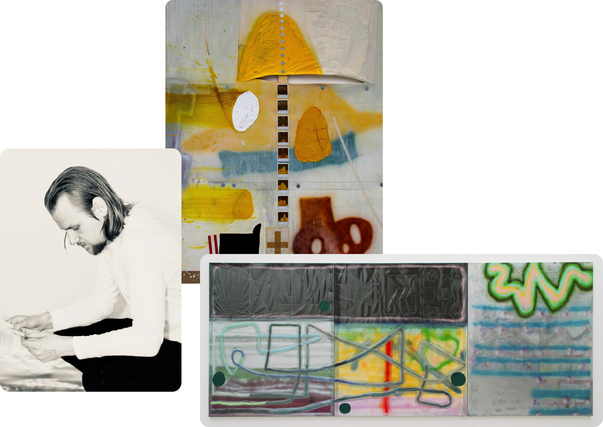
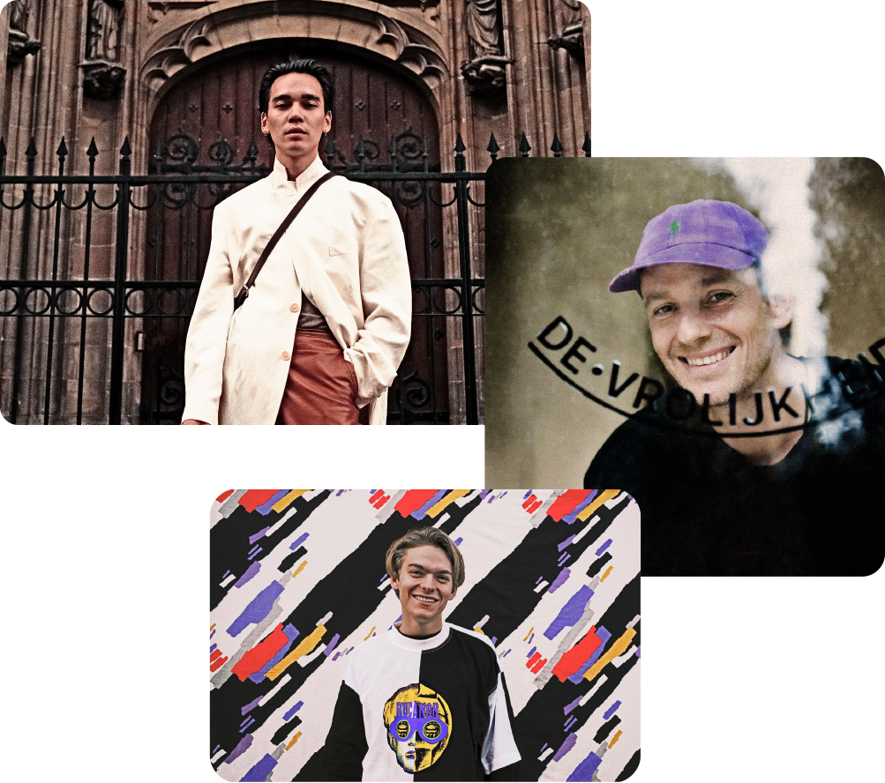
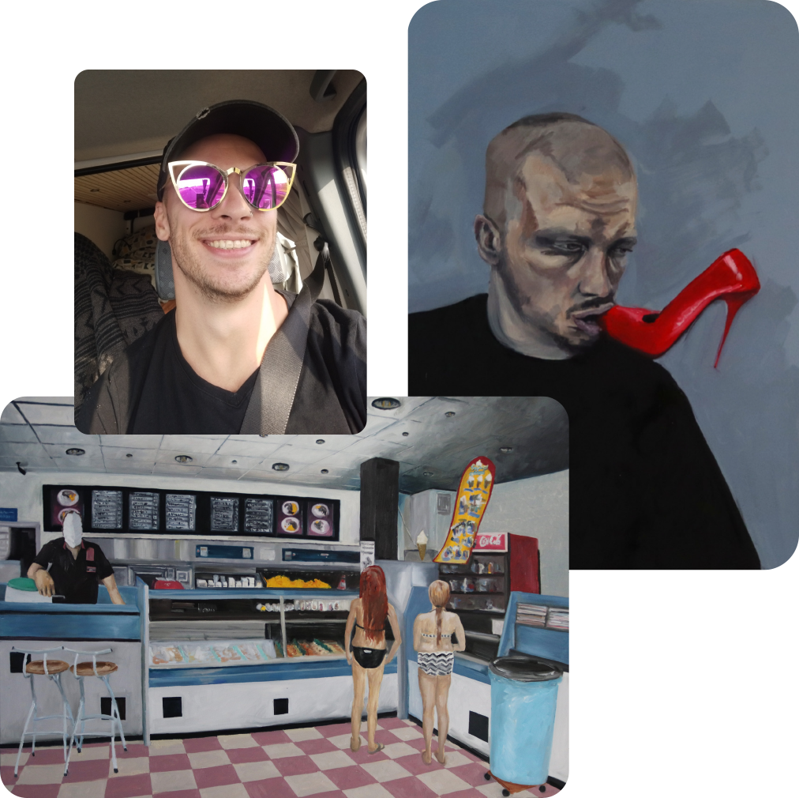

De volgende acht kunstenaars hebben hun werk laten zien bij DeK Expo 2023. Naast het tonen van hun werk, wilden we ook diepgang geven aan de inkijk van hun praktijk. Daarom hebben we tekstschrijver en journalist Birgit Barten gevraagd om iedere maker te bezoeken in hun atelier en ze daar te interviewen. Deze interviews download je gratis. Had je een favoriet bij DeK Expo 2023? Lees dan nu wat er in hun praktijk gebeurd.
Birgit Barten is een ontzettend getalenteerde schrijfster, wil je haar zelf ook vragen voor een project? Mail ons dan op info@dekstichting.nl voor haar contact informatie
Of bekijk haar LinkedIn
en haar Instagram

Kunstenaar Cas van Deurssen (1994) is in zijn werk op zoek naar balans, zonder die
balans te willen vinden. Daarnaast is hij altijd op zoek naar nieuwe manieren van
maken en experimenteert hij met materialen.

Ema Vanekova (1999) schildert figuratieve werken en werkt vooral op intuïtie. Ze
probeert momenten uit de tijd te ‘stelen’ en deze zo puur mogelijk op het doek te
weergeven. “De simpelheid van dingen heeft al superveel waarde.”

Frank Willems (1987) maakt werk met een mix van urbanart, popart en
neo-expressionisme. Zijn werk is speels en soms vind je zelfs verborgen
boodschappen in zijn werk.

Pjotr van Leeuwen (1992) beeldt in zijn werk de essentialia van het leven uit door te
assembleren en de verschillende lagen op het doek aan te brengen. Hij werkt
experimenteel met niet-traditionele materialen en technieken.


Nikki Nordmann (1982) zoekt in zijn straatfoto’s een bepaalde tijdloosheid. Daarnaast
maakt hij ook collages, hiphopbeats en documentaires. Binnen zijn fotografie werkt
hij met fotorolletjes die hij laat ontwikkelen, hij werkt ook niet met digitale camera’s.
“Je kunt aan mijn foto’s zien dat ik een hiphopziel heb, zonder dat mijn foto’s iets met
hiphop te maken hebben.”

Jos Merkx (...) gebruikt in zijn werk klassieke schildertechnieken, maar experimenteert
met wat nodig is om af te beelden en maakt ook de schets onderdeel van het doek.
Zijn werken gaan veelal over hoe hij zichzelf ziet en anderen. “Mijn werk is innig
persoonlijk.”